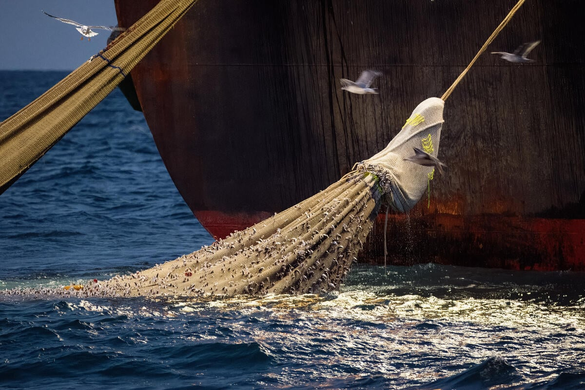
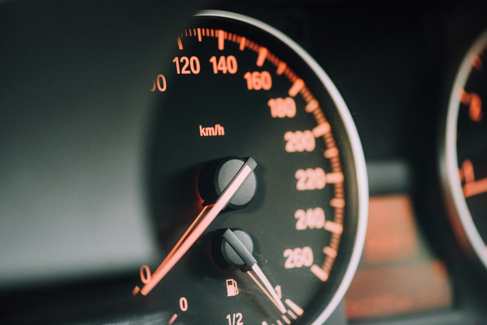
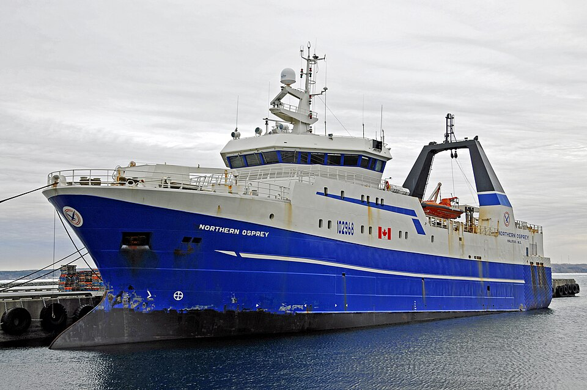
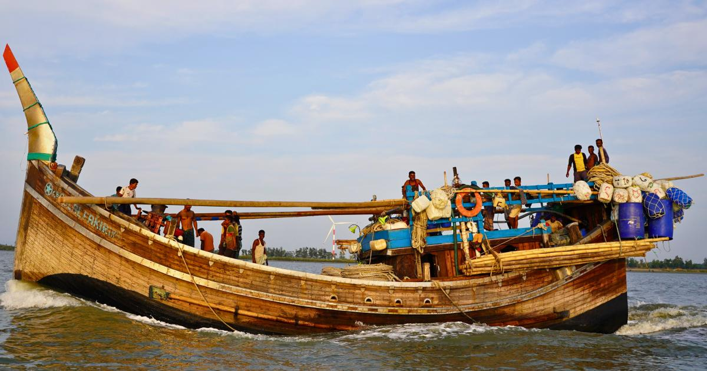
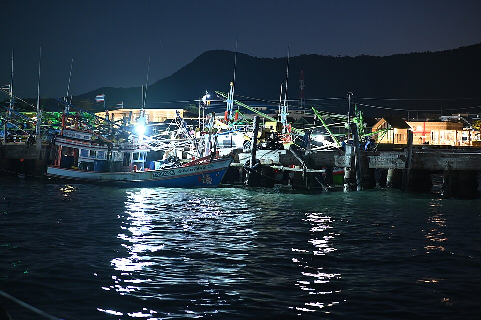
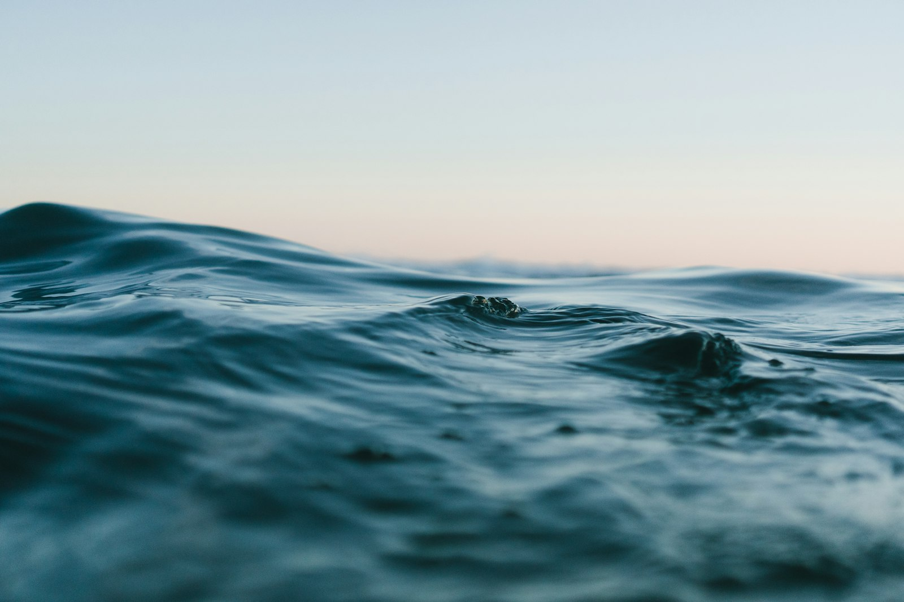
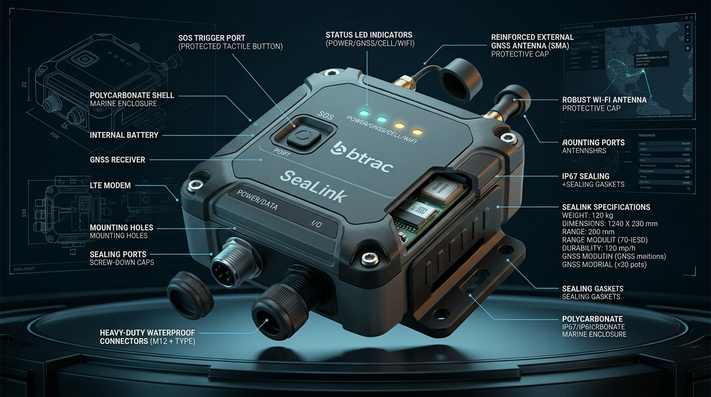

SeaLink by b-Trac
Connected Vessel Tracking, Safety & Maritime IoT Beyond Mobile Networks
Turn Bangladesh’s 30,000+ offshore fishing vessels into connected digital assets. Operating in deep waters 100–200+ km from the coast where cellular towers vanish, SeaLink combines B-Trac’s existing VTS infrastructure with Starlink satellite backhaul and locally engineered rugged IoT hardware.
The Market Opportunity at a Glance
Bangladesh’s maritime economy features tens of thousands of mechanized vessels traveling deep into the Bay of Bengal. SeaLink converts an existing terrestrial tracking infrastructure into an offshore recurring-revenue business.
Fishing vessels registered in the Department of Fisheries database [1]

Active fishermen operating offshore requiring emergency & welfare connectivity [1]

Typical target offshore voyage duration outside mobile range in deep waters
BDT one-time customer investment willingness for a reliable tracking package
BDT monthly recurring subscription affordability target per vessel



Beyond 50 Kilometers: The Deep-Sea Blind Spot
Modern fishing trawlers head 60–200+ km offshore into deep international and EEZ waters. Terrestrial cellular towers vanish, creating an information void that threatens vessel safety and deprives owners of control.

Harbor Departure
0–20 km from coast (e.g., Cox's Bazar / Chattogram estuary). Cellular GSM towers provide strong signal.
Mid-Shelf Transit
20–50 km offshore. GSM signals degrade rapidly due to curvature and sea surface attenuation.

Deep Sea Fishing Grounds
60–200+ km in deep international waters. Standard cellular tracking fails completely [2][3].
Critical Vulnerabilities in the Digital Blind Spot
Owner Loses Vessel Position
Owners have zero live confirmation of boat heading, speed, or actual operating coordinates.
Captain Out of Contact
No voice, messaging, or urgent weather advisories can reach the captain during sudden storms.
Crew Families Disconnected
15–30 days of complete silence creates severe anxiety for crew families during hazardous voyages.
Emergency SOS Crippled
Piracy, engine breakdown, capsizing or medical distress cannot be reported in time.
Unnoticed Route Deviations
Unintentional crossing into foreign territorial waters or hazardous shoals goes undetected.
Prolonged Stoppage Unknown
Net entanglements or drift conditions remain completely invisible to shore fleet managers.
Vessel Power Failure Silent
Generator trip or battery drain cuts electrical systems with no diagnostic alert back to base.
No Last Known Fix
In catastrophic weather, rescue authorities lack reliable historical coordinates for search grids.
SeaLink closes that gap.
Delivering continuous, offline-resilient satellite telemetry and critical communications everywhere in the deep Bay of Bengal.
Why Now? The Four Pillars Converging into SeaLink
Most companies attempting maritime IoT must build hardware, cloud infrastructure, and sales networks from zero. B-Trac already possesses three of the four core pillars.
Existing B-Trac VTS Platform
Proven tracking backend, map visualization, account management, telemetry database, and alert engines are already deployed and battle-tested.
Starlink Capability in BD
B-Trac's access and commercial capability with Starlink in Bangladesh enables high-speed low-latency satellite broadband beyond 12 NM.
Internal Embedded Engineering
In-house embedded hardware and firmware team capable of delivering the rugged Wi-Fi/GNSS edge tracker in an estimated 1–2 week prototype cycle.
Existing Sales & Field Support
National commercial sales force, technical installation expertise, and 24/7 customer support networks ready for commercial rollout.
SeaLink by b-Trac
“Most of the infrastructure already exists. The missing layer is the maritime edge device and product packaging. By connecting these four elements, B-Trac can open a completely new maritime market with low capital expenditure.”
More Than GPS: The 5-Point Transformation
Commodity tracking devices treat location as the final destination. SeaLink uses tracking as the gateway to a holistic vessel safety and operations ecosystem.
Answers only:
“Where is the vessel?”
- ✕ Stops reporting once cellular coverage drops
- ✕ No captain voice or video link
- ✕ No onboard visual surveillance
- ✕ Zero crew connectivity
- ✕ Tracking is the end of the line
Simultaneously Answers:
01. Existing B-Trac VTS
Leverages established cloud infrastructure, mapping, accounts and telemetry engines.
02. Satellite Backhaul
High-speed Starlink integration overcomes the 50km offshore mobile cellular barrier.
03. Locally Engineered
Tracker designed and programmed by B-Trac’s internal embedded systems team in Dhaka.
04. Dedicated Field Support
Marine-certified technicians deployed across Chattogram, Cox's Bazar, and Khulna hubs.
05. Offline-First Storage
Local flash memory retains 30+ days of coordinates and automatically syncs upon reconnection.
06. Modular Subscriptions
A scalable 4-tier package ladder allows owners to start with tracking and upgrade as needed.
07. Safety Priority (QoS)
Intelligent network rules strictly ensure telemetry and emergency SOS take precedence over crew data.
08. Expandable IoT Bus
Plug-and-play architecture for fuel level, engine RPM, bilge level, and cold storage sensors.
End-to-End Data Pipeline
Watch how telemetry travels from constellation satellites down through the SeaLink edge tracker, via Starlink beam, into the B-Trac cloud and directly onto the vessel owner’s dashboard.
Offline-First Telemetry & Burst Synchronization
Satellite connectivity can be momentarily shadowed by towering squalls or high seas. SeaLink’s edge firmware buffers every GPS fix locally and delivers a rapid burst sync the instant the link recovers.
12:35 PM — Severe Squall: Starlink Connection Interrupted
Live Deep-Sea Tactical Vessel Tracking
Vessel FV SeaLink Demo-01 is operating in deep waters of the Bay of Bengal (19.8520° N, 90.4180° E, 115 NM offshore, water depth 2,150m). All terrestrial mobile coverage has completely ceased. Tracking, health telemetry, and safety monitoring are sustained 100% via satellite.
Intelligent Mission-Control Event Stream
SeaLink monitors onboard sensors and satellite conditions 24/7, raising automated push, SMS, and dashboard notifications for operational deviations and safety threats.
Emergency SOS Triggered
Captain activated tactile wheelhouse SOS switch. Deep-sea coordinates locked & sent to rescue dispatch.
Geofence Boundary Exit
Vessel crossed designated 80 NM pilot zone perimeter heading southeast towards international waters.
Prolonged Stoppage Detected
Speed under 0.8 kn for >180 minutes offshore. Logged as commercial net deployment activity.
Primary 12V Power Cut
External generator disconnected. Edge tracker smoothly transitioned to internal LiPo backup battery.
Enclosure Cover Tamper
Internal optical tamper switch triggered on Edge Tracker enclosure lid. Logged with timestamp.
Severe Cyclone Alert Integration
Automated BMD (Bangladesh Meteorological Dept) cyclone warning broadcasts directly to wheelhouse terminal.
Strict Service Priority Hierarchy (QoS)
Satellite bandwidth in deep waters is a precious resource. SeaLink enforces hard kernel-level QoS rules so crew video calls or browsing can never choke critical vessel tracking or SOS packets.
GNSS coordinates, SOS broadcast, battery voltage & heartbeats. Guaranteed 100% throughput.
Captain VoIP calls, fleet command messaging, storm advisories and navigation coordination.
Manual remote video snapshot requests. Restricted to owner-authorized on-demand viewing.
Managed Wi-Fi browsing. Automatically paused or rate-limited whenever higher-priority traffic occurs.
The Four Service Packages
One unified hardware platform with an incremental upgrade ladder. Click each package to see the vessel transform with installed hardware modules.
SeaLink Track
The dependable mass-entry product. Delivers continuous live GNSS positioning in deep waters, full trip voyage history, geofencing alarms, local offline flash buffering, SOS button integration, and vessel power diagnostic alerts.
Detailed Capability Comparison Matrix
RESPONSIVE TIERS| Feature / Capability | SeaLink Track | SeaLink Connect | SeaLink Secure | SeaLink CrewConnect |
|---|---|---|---|---|
| Live Deep-Sea GNSS Tracking | ✓ | ✓ | ✓ | ✓ |
| Voyage Trip History & Logs | ✓ | ✓ | ✓ | ✓ |
| Tactile Emergency SOS Input | ✓ | ✓ | ✓ | ✓ |
| Offline Flash Buffer & Auto-Sync | ✓ | ✓ | ✓ | ✓ |
| Captain Voice Calling (VoIP) | — | ✓ | ✓ | ✓ |
| Captain Video Calling | — | ✓ | ✓ | ✓ |
| Local CCTV Video Recording | — | — | ✓ (Local NVR) | ✓ (Local NVR) |
| Remote On-Demand CCTV Viewing | — | — | ✓ | ✓ |
| Controlled Crew Wi-Fi Hotspot | — | — | — | ✓ |
| Individual Quotas (500MB / 1GB) | — | — | — | ✓ |
| Kernel Bandwidth Priority (QoS) | ✓ | ✓ | ✓ | ✓ |
Starlink Integration & Data Economics
Understanding satellite bandwidth costs is critical to designing sustainable subscription packages. Here is the current public baseline for Starlink in Bangladesh and how SeaLink manages data.
Roam 50 GB
Public monthly retail plan in Bangladesh [4][5]. Perfect baseline for pure tracking and operational messaging packages.
Roam Unlimited
Public monthly retail plan in Bangladesh [4]. Applicable for commercial fleet flagships demanding high-speed unlimited communication.
Deep-Sea Metering
Published rate for usage beyond 12 nautical miles offshore [6][7]. Makes video and crew quota control vital.
Final hardware configurations, maritime service eligibility, data economics, and B-Trac distributor reseller terms must be validated during the pilot. The figures above represent public retail baselines to demonstrate economic feasibility without making contractual pricing commitments.
Proposed SeaLink Edge Tracker
A rugged, marine-grade IoT edge terminal designed by B-Trac’s internal embedded engineering team. Built to withstand vibration, saline corrosion, high humidity, and erratic vessel generator voltages.

IP67 Polycarbonate Marine Enclosure
Hermetically sealed against salt fog, sea spray, and deck washdowns. UV-stabilized impact-resistant casing.
Multi-Constellation GNSS Receiver
Simultaneous GPS, GLONASS, Galileo & BeiDou satellite lock. External SMA high-gain marine antenna option.
Non-Volatile Flash Offline Storage
Stores up to 30 days (over 50,000 points) of offline telemetry and sensor readings with CRC verification.
Protected 12V DC Input + LiPo Backup
Marine transient surge suppression (ISO 7637-2 certified) with internal rechargeable battery for 48h emergency standby.
Dedicated Wheelhouse SOS Trigger Port
Heavy-duty M12 waterproof connector wired to a tactile wheelhouse panic switch with latching emergency state.
Our embedded team already possesses compatible MCUs, GNSS modules, and test benches in Dhaka ready for bench validation.
*Initial internal prototype estimate subject to engineering validation (not a commercial delivery commitment).
Surveillance & CrewConnect in Action
Explore how SeaLink balances high-value video verification of real fishing operations and crew welfare without exceeding satellite data budgets.
Boat Dock & Deep-Sea Video Feed
Rugged IP cameras monitor the boat dock, mooring lines, and open sea horizon. Video records 24/7 locally onto an onboard solid-state NVR, allowing owners to stream live or retrieve high-res snapshots on demand via Starlink.
Onboard Crew Quota Management
Individual crew members receive dedicated voucher quotas (e.g. 500 MB or 1 GB) with scheduled access hours and bandwidth rate-limiting to protect operational budgets.
The Three-Tier Revenue Flywheel
SeaLink creates a self-reinforcing financial flywheel. Initial hardware deployment covers installation costs, monthly SaaS & connectivity generate predictable recurring revenue, and IoT expansions drive long-term customer lifetime value.
Hardware & Marine Commissioning
SeaLink Edge Tracker, Starlink marine terminal, M12 cabling, wheelhouse SOS switch, optional cameras/NVR, and dockside certified installation.
Platform Subscription & Satellite Backhaul
B-Trac VTS cloud access, geofence monitoring, SMS/push alert engine, Starlink data package, and 24/7 technical helpdesk.
Data Bundles, CCTV & CrewConnect
Ocean Mode data metering top-ups, crew Wi-Fi voucher sales, cloud CCTV clip exports, and future fuel/engine sensor additions.
5-Phase Commercialization Roadmap
A disciplined, low-risk approach. Prove performance on a small controlled fleet, validate satellite data economics, and scale across coastal fishing associations.
Build & Validate
Build edge tracker prototype (1–2 weeks), bench test GNSS & Wi-Fi, integrate MQTT ingest with existing B-Trac VTS backend.
10–20 Vessel Pilot
Deploy across a controlled test fleet. Measure real offshore satellite data burn, power fluctuations, and owner satisfaction.
Commercial Launch
Equip B-Trac sales teams with demonstration tablets. Show owners real vessels operating 100+ km offshore in real time.
Landing Clusters
Partner with fishing vessel owner associations in Cox's Bazar, Chattogram, and Barguna. Drive word-of-mouth adoption.
Fleet & Enterprise
Roll out multi-vessel enterprise fleet portals, corporate analytics, and explore future public-sector (B2G) data integrations.
“Don’t explain SeaLink. Show it.”
A vessel owner watching their own boat remain live and visible on a mobile screen 100+ km offshore in the deep sea—while other boats go dark—is the single most compelling sales demonstration possible.
Target private boat owners and commercial trawler operators directly. Government adoption is an upside expansion, never a launch prerequisite.
*Disclaimer: SeaLink complements statutory AIS/VMS frameworks and does not claim to replace legally mandated systems without formal certification.
Beyond Tracking: The Maritime IoT Ecosystem
Tracking is the gateway. Once satellite connectivity and an edge terminal are established onboard, SeaLink transforms into a comprehensive vessel telemetry and industrial IoT ecosystem.
Fuel Monitoring
Ultrasonic fuel level, consumption rate & theft/anomaly detection.
Engine Health
RPM telemetry, coolant temperature & engine runtime hours.
Battery Voltage
Alternator charging curve & low-voltage discharge warnings.
Bilge Water Level
High-water hull alerts & automated bilge pump runtime logging.
Cold Storage Temp
Fish hold freezer temperature to prevent catch spoilage.
Hatch / Security
Magnetic reed sensors monitoring hold access & wheelhouse tampering.
Weather Warning
BMD cyclone warning integration pushed straight to captain.
Fishing Zone Intel
Maritime boundaries, marine sanctuaries & seasonal ban alerts.
Maintenance Log
Automated service alerts based on cumulative operating sea-hours.
Electronic Trip Logs
Digital voyage catch recording & landing declaration paperwork.
SeaLink Tracker → SeaLink Maritime IoT Platform
Tracking provides the entry point. Connectivity enables additional services. Data creates the long-term enterprise platform value.
Key Risks, Controls & Pilot KPIs
A responsible concept does not ignore execution risks. Here is how every potential unknown is controlled and answered by the 10–20 vessel pilot.
Starlink Maritime Economics
Deep-sea Ocean Mode billing beyond 12 NM may increase data costs.
Harsh Marine Environment
Salt fog, high humidity, vibration and erratic generator spikes.
Standardized Installation
Mechanized wooden boats have varied wheelhouse layouts and power taps.
Video Consumes Too Much Data
Continuous live CCTV streaming would exhaust satellite quotas.
Commercial Willingness to Pay
Target BDT 10K–12K monthly subscription must align with owner profits.
Regulatory Compliance (AIS/VMS)
Overlapping statutory mandates from Department of Fisheries.
Targeting: ≥99% telemetry continuity, zero critical data loss, measured data consumption (GB/vessel), and >60% paid conversion intent.
The Decision Isn’t Whether We Can Build It.
The Decision Is Whether We Should Validate the Market Now.
B-Trac already has the tracking platform, the sales team, the engineering talent, and the satellite connectivity capability. The barrier to experimentation is unusually low.
- ✓ Full VTS cloud platform & map UI
- ✓ Starlink business capability in Bangladesh
- ✓ Embedded hardware engineering team
- ✓ National corporate sales & field support
- ⚡ Build 1–2 week Edge Tracker prototype
- ⚡ Validate 10–20 vessel controlled pilot
- ⚡ Confirm Starlink maritime data economics
- ⚡ Measure willingness-to-pay before full rollout
Approve SeaLink Prototype + Controlled Pilot
(Not a premature nationwide launch commitment — a focused, data-driven validation gate)